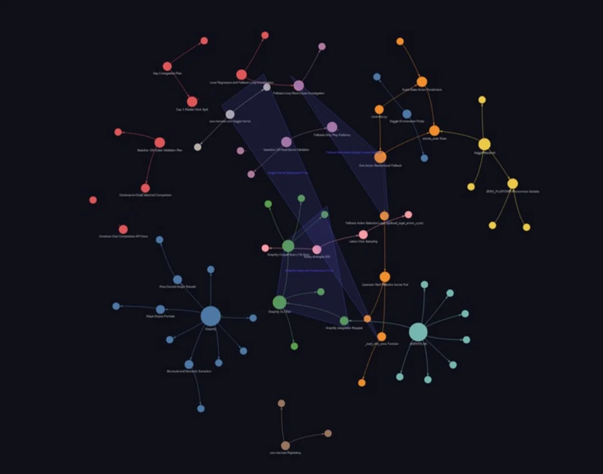

Exposure AI Academy · jüri sunumu · Ağustos 2026
Ne denedik. Ne bozuldu. Ne öğrendik.
1. gün
Başlangıç noktasıYeni ekip + bilinmeyen problem → önce ortak dil.
İlk çıktımız kod değil, problemi anlamaktı.
1. gün → 2. gün
4× paralel
Strateji taraması / Strategy scout
Ana kısıtZaman çok azdı; birlikte çalışabilecek stratejileri öne aldık.
Bu karar son gece değişecek.
Mimari / Architecture
Neden bu yapı?Stratejileri bağımsız geliştirip aynı akışta birleştirdik; geri bildirim geldikçe iterasyon yaptık.
Geliştirme akışı
Repo bağlamındaki araçlara daha az sürtünmeyle erişim.
Tekrarlayan işleri azaltıp iterasyonu hızlandırma.
Local → Colab → Kaggle arasında ortam farklarını erken yakalama.
Daha az sürtünme, daha hızlı iterasyon.
GitHub orkestrasyonu
> Cevap Git geçmişinde.
Gerçek Git geçmişi / 5 Ağustos
164 commit3–7 Ağustosremote şu an master'da birleşmiş durumda
Graphify / Bilgi grafiği

Mevcut modül importlarından temsili görünüm
Graphify, modüller arasındaki ilişkileri grafikte tutarak Claude'un ihtiyaç duyduğu bağlama daha doğrudan ulaşmasını hedefledi.
Değerlendirme darboğazı
Bir değişikliğin gerçekten işe yaradığını nasıl anlarsın?
Aynı kod
Run A→3 oyunda puan
Run B→2 oyunda puan
Küçük ama gerçek iyileştirmeler varyansın içinde kaybolabilir.
Kaggle setup'ını yerelde yeniden kurup ortam farkını yakaladık.
AI geliştirme araçları
Kullandığımız araçlar
Darboğazlar
Bu dört araç geliştirme sürecindeki hangi darboğazları çözdü?
Cevabı slayta sabitlemiyoruz; anlatımda örneklerle açıyoruz.
Sonra Kaggle'a submit ettik.
Tek bir sayı, bütün kararı değiştirdi.
Son gece
Mentor uyarısıSkor final sıralamasında kritik.
Pivot
Yeniden değerlendir
Bu kombinasyon Duck'a geçişi tetikledi; sonraki sonuç 0.93 oldu.
Karar prensibiKanıt > fikre bağlılık
Ne öğrendik?
En büyük hata Duck'a geç kalmamız değildi.
Sistemi gerçek değerlendirme döngüsünde yeterince erken doğrulamamaktı.
ARC-AGI-3 · Ne denedik. Ne bozuldu. Ne öğrendik.
Soru?